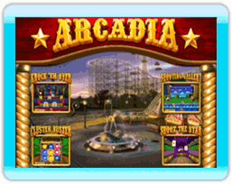
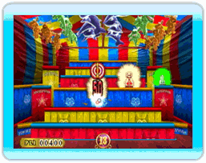
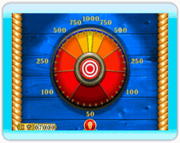

6 |
Introducción |
 |
Carnival King es un divertido juego de video para todas las edades, que lleva el espíritu y la energía de los competitivos juegos de feria a la pantalla.
 Después de seleccionar un parque, dispara en uno de los juegos en cualquier orden para iniciar la ronda 1. Tienes 20 segundos para atinarle a tantos blancos con tanta puntería y tan rápidamente como te sea posible. El único castigo por fallar es no tener más tiempo para atinarle a los blancos. La puntuación de cada blanco, el blanco de bonificación y el reloj de bonificación están predeterminados y aparecen antes de que comience el juego. Atínale a los relojes de bonificación que aparecen durante la ronda y conseguirás más tiempo.  Al final de la ronda 1, obtendrás tiempo de bonificación según la puntuación obtenida, tiempo que se agrega al reloj de la ronda 2. La ronda 2 es más rápida y empieza con menos tiempo, apenas 15 segundos, por lo que el tiempo de bonificación es crucial para pasar por todos los blancos y los blancos de bonificación, con el fin de aumentar la puntuación.  Después de completar cada uno de los cuatro juegos, si alcanzas un puntaje de 15,000 puntos o más pasarás a la ronda de bonificación. Los tres parques de diversiones tienen ronda de bonificación distinta: Bonus Wheel, Clown Drown y Dunk Tank. Una vez que termines los cuatro juegos y la ronda de bonificación, recibes tu puntuación final, un premio y un título. ¿Te darán una pelota de playa y te llamarán Novato humilde o podrás bailar hasta la Gran Carpa, ostentando la corona de Carnival King? |
 Los jugadores compiten para obtener la puntuación más alta y premios durante su visita a parques de diversiones diferentes: Arcadia, Dreamland y Lagoon Park. Cada parque tiene cuatro conjuntos de juegos y una ronda de bonificación que pone a prueba la velocidad y precisión de los jugadores al tirar. Sin importar que seas un tirador novato o experto, los juegos son un desafío continuo y puedes ajustar el nivel de dificultad a tu confianza creciente como jugador.
Los jugadores compiten para obtener la puntuación más alta y premios durante su visita a parques de diversiones diferentes: Arcadia, Dreamland y Lagoon Park. Cada parque tiene cuatro conjuntos de juegos y una ronda de bonificación que pone a prueba la velocidad y precisión de los jugadores al tirar. Sin importar que seas un tirador novato o experto, los juegos son un desafío continuo y puedes ajustar el nivel de dificultad a tu confianza creciente como jugador.
 |
 |
 |